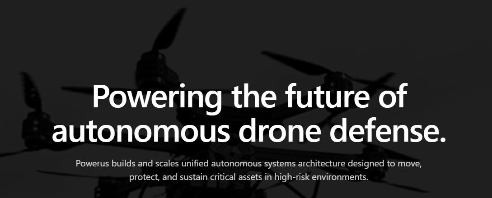
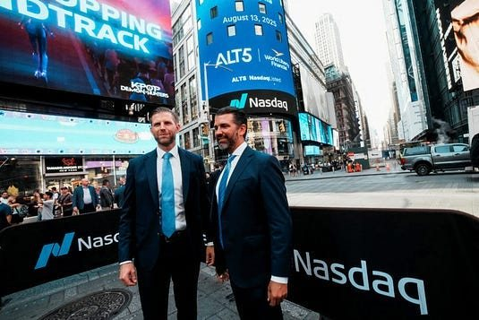
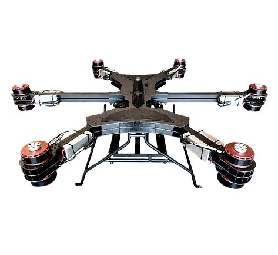
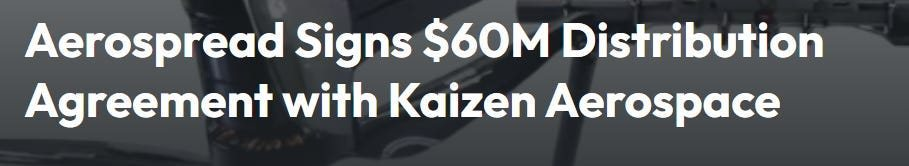
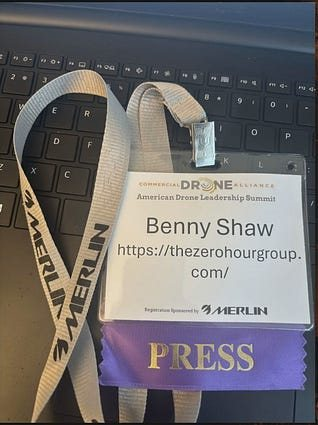

Here at The Zero Hour Group, one of our main priorities is to travel the world to get you high quality, in-depth interviews with the leaders of these publicly traded companies to give you an edge usually saved for institutional investors behind closed doors. Retail traders deserve to be informed too!
Last week, we caught up with Powerus executives at the Commercial Drone Alliance’s Drone Leadership Summit in Washington, D.C. The theme this year was “Drone Dominance and Airspace Sovereignty: One Year Later.” The room was absolutely packed with the people actually writing the rules for U.S. airspace: FAA officials, Pentagon buyers, and the founders racing to fill the gap left by years of Chinese drone dominance.
We sat down with Ziv Marom, co-founder and CTO of Powerus and founder of Kaizen Aerospace, for what he told us was the company’s first-ever interview with a financial media outlet. It was also our first look at a company most retail investors haven’t heard of yet, despite the fact that two of the sitting president’s sons have money in it.
I’m going to touch on who Powerus is, what Kaizen Aerospace actually builds, how the Trump family fits in, and why a company most people are unaware of just landed in the same wildfire competition as Anduril.
What Powerus Actually Is

Powerus started life as Autonomous Power Corporation, a holding company built around a simple bet: the next decade of aviation gets rebuilt around autonomy, and someone needs to own the hardware, the software, and the manufacturing base underneath it. Rather than build one drone and hope, Powerus acquired and integrated a handful of working companies under one roof.
Three subsidiaries carry the operation. Kaizen Aerospace builds heavy-lift autonomous aircraft rated for payloads past 500 pounds, which we will get the full rundown from Ziv on soon in the full length interview we hosted. Tandem Defense builds tactical platforms for military training and counter-drone work. Agile Autonomy handles maritime surveillance. A fourth arm, Powerus Labs, functions as the in-house R&D shop, working on everything from self-repairing materials to the AI models that fly the aircraft.
On March 9, 2026, Powerus announced a merger with Aureus Greenway Holdings, a Nasdaq-listed company (ticker $AGH) that had been sitting in the golf course business. The combined entity will trade as Powerus Corporation under the ticker $PUSA. Aureus Greenway already swapped its ticker to PUSA ahead of the close. As of this writing, the deal hasn’t finished: the companies filed their Form S-4 registration statement with the SEC on July 30, 2026, and the merger still needs that registration to go effective along with the usual regulatory sign-offs. Both sides now point to the second half of 2026 for a closing target.
The Trump Family Connection

Aureus Greenway was backed by Eric Trump and Donald Trump Jr. before the merger was ever announced, and Powerus has described the two as “notable investors” in the combined company. That truth has driven most of the mainstream coverage of this deal, and for good reason, they have the ear of the president. The Trump sons have been building a small portfolio of drone and defense-adjacent companies during a period when the administration they’re related to is actively steering federal money toward domestic drone manufacturing. We already got a case like this with $UMAC, which has absolutely exploded to the upside this year, making a 60% intraday gain when Trump tweeted about investing in drone manufacturers. I think the same thing could happen for Powerus, which is why I’m telling you now, before the move.
The Washington Post, the Associated Press, and PBS have all covered the broader pattern. Eric Trump and Don Jr. have invested in or advised at least four drone-related companies, and every one of them has picked up government business since the start of the second Trump administration. Reporters and ethics watchdogs have flagged the obvious conflict: the president’s family stands to profit directly from a policy push, most visibly the “Golden Dome” missile-defense initiative and the broader effort to reduce U.S. reliance on Chinese-made drones, that the president himself is driving. Powerus and its backers haven’t disputed the investment; they’ve framed it as smart capital following an obvious growth market. I want to make it clear that I do like the company as well, and after meeting leadership, am very confident in their future.
Ziv Marom and the Kaizen Aerospace Origin Story
Marom’s path to building drones runs through the Israeli military and a Hollywood soundstage. He grew up in Israel and served in the IDF’s Intelligence Corps, then moved into film production, flying camera drones for productions including The Matrix and The Expendables 3. That work put him deep into the mechanics of aerial cinematography: cable rigs, door-off helicopter shots, and the sensor and stabilization technology that makes those shots possible.
He eventually folded that experience into Kaizen Aerospace, which now operates as a Powerus subsidiary. Marom told us the goal from day one was pairing serious hardware with autonomy software rather than treating drones as remote-controlled toys with bigger batteries. That combination, the airframe and the AI stack together, is the core pitch for everything Kaizen has built since, and they have been landing massive contracts to back it up.
The Product Line: The xFold Dragon Family

Kaizen’s flagship hardware is the xFold Dragon series, a family of foldable, hybrid-powered heavy-lift drones that scale from light commercial work up to genuine cargo capacity.
The base xFold Dragon carries up to 60 pounds and flies up to four hours on hybrid power, aimed at inspection, mapping, and emergency-response work. The DragonH300 steps up to a 300-pound payload in a military-grade, U.S.-built frame. The DragonH500 carries up to 500 pounds at a 655-pound maximum takeoff weight, with endurance past seven hours depending on configuration. At the top of the range, the DragonH1000 lifts up to 1,000 pounds and stays airborne for as long as 7.5 hours. Every model in the line is NDAA-compliant and built domestically, which is extremely relevant due to the drone industry still being predominately subject to Chinese components.
The physical design matters as much as the payload numbers. The aircraft fold down small enough to deploy out of the back of a standard SUV, which means a rescue team can get a system to a remote location without a trailer or a helicopter. Marom pointed to that portability directly: a folded drone in a truck bed can reach a stranded hiker or a flooded neighborhood in minutes, at a fraction of the cost of scrambling a helicopter, meaning the use case is extremely relevant in remote areas. Small towns will be able to fund a drone where a helicopter was never an option. This equates to potentially hundreds or thousands of future lives saved.
xNav: The Software Element
The hardware gets the attention, but Powerus is selling a software stack underneath it called xNav. Marom described it as three linked components. A ground station handles mission planning, either on a laptop or built into a pilot’s radio. An onboard flight computer ingests live sensor data plus preloaded maps and terrain data, and makes navigation decisions in under a second. A separate flight controller executes those decisions as actual stick inputs, left, right, up, down.
The system is built for redundancy on purpose. It can fall back across standard radio link, LTE, or satellite, so a jammed or degraded signal in a contested environment doesn’t strand the aircraft. Marom raised Ukraine directly here: dense electronic warfare environments are exactly the scenario xNav is built to survive, and he argued the aircraft’s ability to sense its environment and land safely on its own, even with every external link cut, is the difference between a $5,000 drone and a lost multimillion-dollar asset.
Where These Drones Are Active

The company already has revenue-generating deployments across several sectors. Agriculture is the biggest near-term commercial push. Kaizen signed a distribution deal with AeroSpread, a New Zealand-based aerial spraying company, worth a minimum of $60 million, covering the Australia and New Zealand markets. The pitch to AeroSpread was straightforward: their spray planes are expensive, occasionally deadly (Marom noted crop-dusters do sometimes clip power lines in bad weather), and can’t legally spray near urban areas or waterways. A drone can. Kaizen also partnered with Sprig Aerospace in the U.S., which became the first operator to win FAA approval to fly drones this size commercially. On the detection side, smaller sensor-equipped drones fly ahead of the spray platform, flag disease, dryness, or pest pressure to an onboard AI, and then direct a precise, localized spray instead of blanketing an entire field. Marom cited a pilot program with John Deere using tower-based drone deployment in remote fields, where a scout drone surveys an area and a second, larger drone flies the exact coordinates that need treatment.
Wildfire response is the highest-profile play right now. Kaizen and its detection partner made the finalist round of the $11 million XPRIZE Wildfire competition’s Autonomous Wildfire Response track, alongside teams backed by companies as large as Anduril. The system stacks heat sensors, wind data, and an onboard AI model trained to distinguish an actual wildfire ignition from a backyard bonfire, then can dispatch a suppression drone autonomously or with a human sign-off. Finalists head to Alaska this summer for live-fire testing. Kaizen previously ran early tests with Cal Fire, and Marom said the technical hurdle was never the aircraft. It was getting regulatory sign-off to deploy a drone the moment a fire starts, before it spreads, rather than only after.
Search and rescue and medical evacuation lean on the same heavy-lift capacity. Marom described a flood-rescue test where the team flew a stretcher out to stranded people on a rooftop and completed the evacuation in a two-minute flight, in a location a helicopter couldn’t reach in time. A thousand pounds of lift is enough to carry an adult on a stretcher, which opens up cliff rescues, flood evacuations, and disaster response in terrain helicopters struggle with.
On the defense side, Tandem Defense builds the Matrix-T, a small FPV target drone that mimics the speed and flight behavior of the improvised attack drones U.S. troops now train against. The U.S. Army selected it for a Best Ranger Competition event, integrating live drone threats into the competition for the first time. Agile Autonomy runs the maritime surveillance side of the business, and Marom drew a direct line from Israel’s Iron Dome and Ukraine’s drone war to the case for cheap interceptors: a $5,000 drone taking down a Shahed-style attack drone that costs the attacker vastly more is exactly what is needed in many western arsenals.
Beyond the core verticals, Marom mentioned a grab bag of smaller commercial requests already coming in: hauling a hot tub over a fence line where a crane can’t reach, moving oranges and logs off remote farmland, running wind turbine maintenance flights in fields too muddy for a truck, and flying firefighters or police officers directly onto a rooftop.
The Money Behind the Machines
Powerus picked up a $30 million strategic equity investment from Unusual Machines (NYSE American: $UMAC) in June 2026, a drone-component manufacturer that already supplies Powerus’s hardware lines. The deal deepens an existing supply relationship aimed at building a domestic component base for defense-grade autonomous systems, which matters given how exposed the broader U.S. drone industry still is to Chinese parts.
Combined with the pending AGH merger and the PUSA listing, Powerus is assembling public-market capital, a Pentagon-adjacent customer base, and real commercial contracts in agriculture at the same time. This is an unusual combination for a company this early, and is the reason The Zero Hour Group is adding it to our coverage list soon.
What We Saw at the Summit

The interview itself happened because The Zero Hour Group met Powerus leadership the night before the summit and locked in the conversation on site the next day. Marom was scheduled to appear on a summit panel discussing where Powerus fits in the broader AI-and-autonomy push shaping U.S. drone policy, and the interview effectively previewed that panel: the regulatory bottlenecks around beyond-visual-line-of-sight flight, the case for domestic manufacturing, and the argument that dual-use technology, useful in a warzone and on a farm, is what actually attracts long-term capital rather than a single defense contract.
This wasn’t a public conference; it was a private working room of FAA officials, defense buyers, and the founders trying to get ahead of both. That a company as under-the-radar as Powerus had a seat on a panel there says something about how fast the field is consolidating around companies that can show working hardware, not just a pitch deck, and is the reason we became so interested in them and am telling you now.
It’s clear that Powerus is thriving in the current landscape. They are flying hardware, landing $60 million contracts, have an XPRIZE finalist slot next to Anduril, and a diverse leadership stack that gives them experience, flexibility, and connections in the field. I’m long Powerus.
Disclosure
The information provided in this publication is for educational and informational purposes only. Nothing in this content should be interpreted as a recommendation, solicitation, or offer to buy or sell any security. I do not provide personalized investment advice or individualized recommendations. All examples, tickers, scenarios, and analyses are strictly for general educational discussion.
The views expressed are my own and do not represent the views, policies, or recommendations of any employer, broker-dealer, or affiliate. Any securities referenced are used solely as case studies to demonstrate research methods and analysis frameworks.
Investing involves risk, including the potential loss of principal. You are solely responsible for your own investment decisions. Consult a licensed financial professional for personalized guidance.